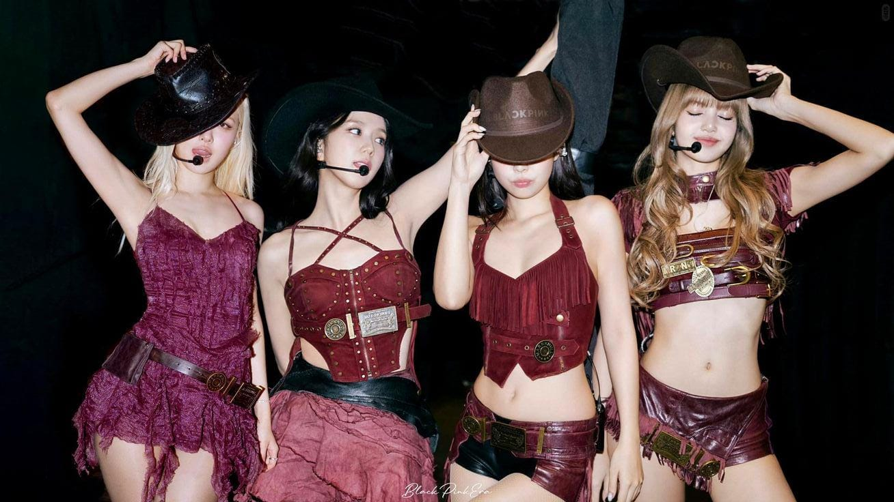
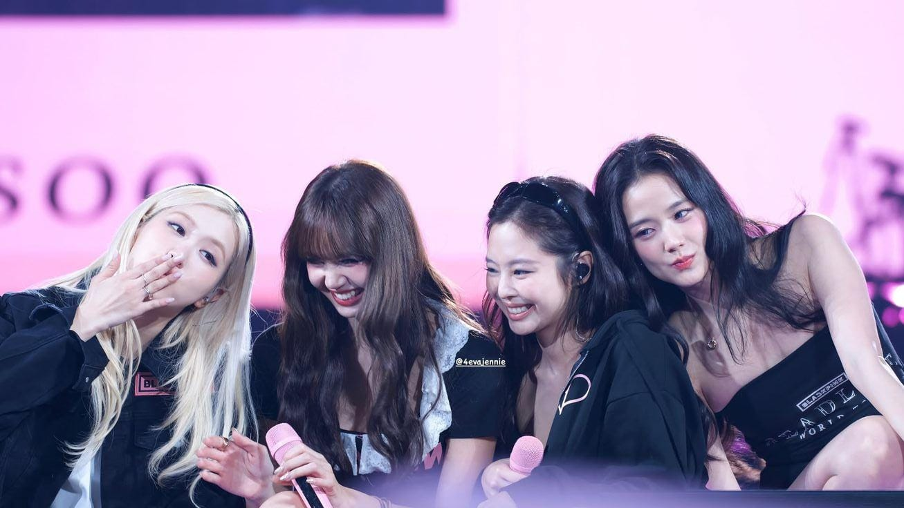
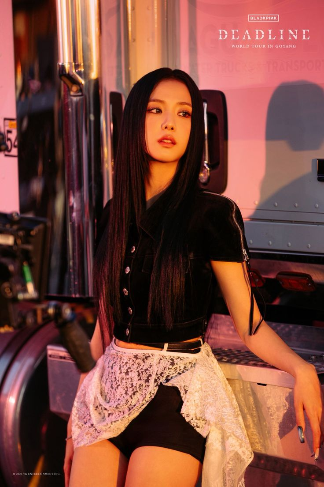
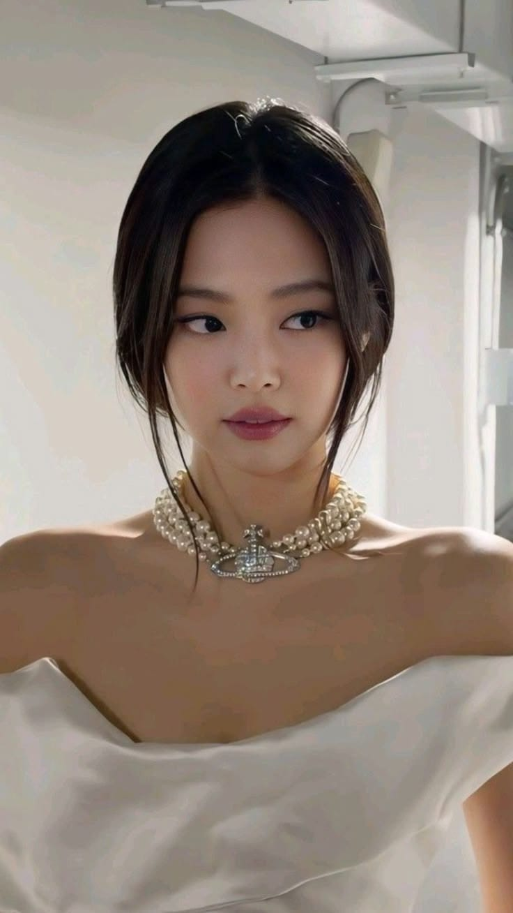
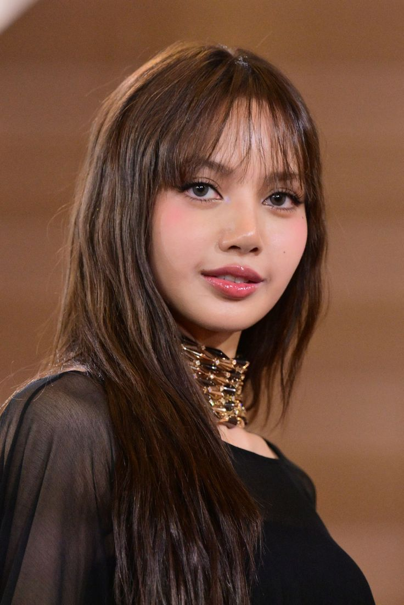
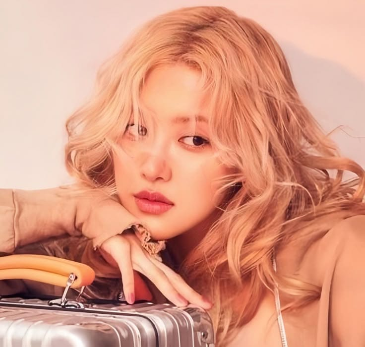
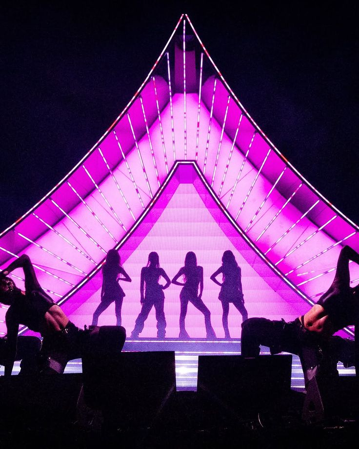

Debutaron con “Whistle” y “Boombayah”, logrando éxito inmediato.
| Integrante | Emoji representativo | Color en el grupo | Tiempo de entrenamiento aprox |
|---|---|---|---|
| Jisoo | 🐰 | Rosa | 5 años |
| Jennie | 🐻 | Negro | 6 años |
| Lisa | 🦆 | Negro | 5 años y 3 meses |
| Rosé | 🐿 | Rosa | 4 años |

Nombre completo: Kim Jisoo
Posición: Vocalista, Visual
Solista: Álbum Me (2023) – “Flower”
Marcas: Dior, Cartier

Nombre completo: Kim Jennie
Posición: Rapera principal, Vocalista
Solista: “Solo” (2018) – Álbum Ruby
Marcas: Chanel, Calvin Klein
Vehículo Icónico: Porsche Taycan 4S Cross Turismo, edición personalizada y única, creada en 2022 a través del programa Sonderwunsch de Porsche para la cantante Jennie de BLACKPINK

Nombre completo: Lalisa Manobal
Posición: Bailarina principal, Rapera
Solista: Álbum Lalisa (2021)
Marcas: Louis Vuitton, Bvlgari

Nombre completo: Park Chaeyoung
Posición: Vocalista principal
Solista: Álbum R (2021)
Marcas: Saint Laurent, Tiffany & Co.

Blackpink ha redefinido el papel de los grupos femeninos de K-pop en el mercado internacional, combinando música, moda y presencia digital masiva. Son consideradas uno de los grupos femeninos más influyentes de la industria musical contemporánea.